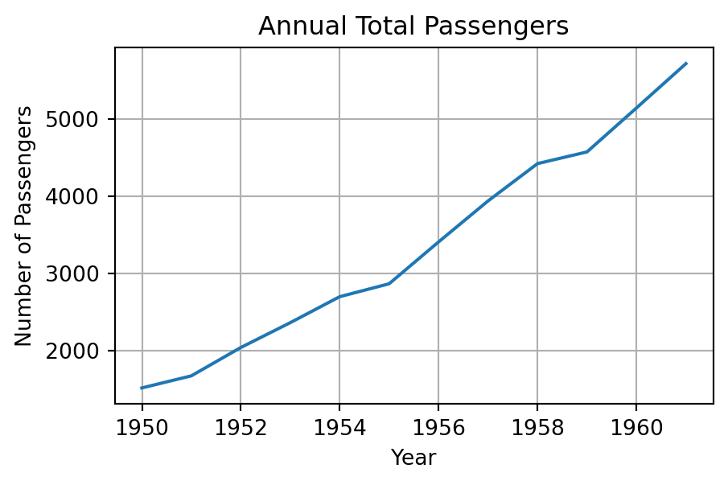

import numpy as np
import pandas as pd4. 라이브러리
4.2. Pandas 라이브러리
4.2.1. 판다스 객체
4.2.1.1. 판다스 객체 소개
- Pandas
- NumPy를 기반으로 만들어진 데이터 분석용 라이브러리
- 레이블(label)로 식별되는 데이터를 쉽게 다룰 수 있도록 지원
- 고성능 데이터 조작, 탐색, 전처리, 변환, 요약, 통계 연산 기능 제공
- 주요 객체로는 Series(1차원), DataFrame(2차원), Index(레이블 관리 구조)가 있음
| 객체 | 설명 |
|---|---|
| Series | - 1차원 레이블이 붙은 배열로, 각 데이터에 고유한 인덱스가 있음 - 모든 원소가 동일한 자료형으로 저장되며, 숫자, 문자열, bool 등 다양한 자료형을 지원 |
| DataFrame | - 2차원 표 형태의 데이터 구조로, 행(row)과 열(column)로 구성됨 - 각 열은 Series로 구성되어 있으며, 각 열이 서로 다른 자료형을 가질 수 있음 - DataFrame은 정렬(같은 인덱스 공유)된 Series 객체의 연속으로 볼 수 있음 |
| Index | - 데이터에 레이블을 부여하는 객체로, 행 또는 열에 사용됨 - 데이터 정렬, 선택, 결합 등을 효율적으로 할 수 있도록 지원 |
4.2.1.2. 판다스 객체 생성
| 함수 | 설명 |
|---|---|
| pd.Series() | 1차원 Series 객체 생성 |
| pd.DataFrame() | 2차원 DataFrame 객체 생성 |
| pd.Index() | Index 객체 생성 |
# Series 생성1 : 리스트 사용
sr = pd.Series([1, 2, 3, 4, 5])
print(sr)0 1
1 2
2 3
3 4
4 5
dtype: int64# Series 생성2 : 넘파이 배열 사용
sr = pd.Series(np.array([1, 2, 3, 4, 5]))
print(sr)0 1
1 2
2 3
3 4
4 5
dtype: int32# Series 생성3 : 딕셔너리 사용
# 딕셔너리 키는 인덱스로 자동 지정됨
sr = pd.Series({'a': 10, 'b': 20, 'c': 30})
print(sr)a 10
b 20
c 30
dtype: int64# Series 생성4 : 인덱스 지정
sr = pd.Series([1, 2, 3], index = ['a', 'b', 'c'])
print(sr)a 1
b 2
c 3
dtype: int64# DataFrame 생성1 : Series 사용
sr = pd.Series([1, 2, 3], index = ['a', 'b', 'c'])
df = pd.DataFrame(sr, columns = ['value'])
print(df) value
a 1
b 2
c 3# DataFrame 생성2 : 리스트 사용
lst = [['Alice', 22], ['Bob', 20], ['Charlie', 27]]
df = pd.DataFrame(lst, columns=['Name', 'Age'])
print(df) Name Age
0 Alice 22
1 Bob 20
2 Charlie 27# DataFrame 생성3 : 넘파이 배열 사용
arr = np.array([['Alice', 22], ['Bob', 20], ['Charlie', 27]])
df = pd.DataFrame(arr, columns=['Name', 'Age'])
print(df) Name Age
0 Alice 22
1 Bob 20
2 Charlie 27# DataFrame 생성4 : 딕셔너리 사용
# 딕셔너리 키는 열 이름으로 자동 지정됨
dct = {'Name': ['Alice', 'Bob', 'Charlie'], 'Age': [22, 20, 27]}
df = pd.DataFrame(dct)
print(df) Name Age
0 Alice 22
1 Bob 20
2 Charlie 27# DataFrame 생성5 : 딕셔너리 + 리스트 컴프리헨션 사용
dct = [{'a': i, 'b': 2*i} for i in range(3)]
df = pd.DataFrame(dct)
print(df) a b
0 0 0
1 1 2
2 2 4# DataFrame 생성6 : Series 사용
# 서로 다른 인덱스를 가진 Series로 DataFrame을 생성하면
# 공통된 인덱스를 기준으로 맞춰지고, 누락된 값은 NaN(Not a Number)으로 채워짐
sr1 = pd.Series([1, 2, 3], index = ['a', 'b', 'c'])
sr2 = pd.Series([4, 5, 6], index = ['a', 'c', 'd'])
df = pd.DataFrame({'x': sr1, 'y': sr2})
print(df) x y
a 1.0 4.0
b 2.0 NaN
c 3.0 5.0
d NaN 6.0# DataFrame 생성7 : 인덱스 및 열 이름 지정
data = [[101, 22], [102, 20], [103, 27]]
columns = ['ID', 'Age']
index = ['Alice', 'Bob', 'Charlie']
df = pd.DataFrame(data, columns=columns, index=index)
print(df) ID Age
Alice 101 22
Bob 102 20
Charlie 103 27# Index 생성1 : 리스트 사용
idx = pd.Index(['a', 'b', 'c', 'd'])
idxIndex(['a', 'b', 'c', 'd'], dtype='object')# Index 생성2 : range() 사용
idx = pd.Index(range(1, 6))
idxRangeIndex(start=1, stop=6, step=1)4.2.1.3. 데이터프레임 속성
| 속성 | 설명 |
|---|---|
| .shape | 데이터프레임의 모양(행, 열) |
| .index | 행 인덱스 조회 및 변경 |
| .columns | 열 이름 조회 및 변경 |
| .dtypes | 각 열의 자료형 확인 |
# 데이터프레임 속성
df = pd.DataFrame({
'Name': ['Alice', 'Bob', 'Charlie', 'David', 'Eva'],
'Age': [25, 30, 35, 40, 28],
'Score': [85.5, 90.3, 78.2, 88.9, 92.5]
})
print(df.shape)
print(df.index)
print(df.columns)
print(df.dtypes)(5, 3)
RangeIndex(start=0, stop=5, step=1)
Index(['Name', 'Age', 'Score'], dtype='object')
Name object
Age int64
Score float64
dtype: object# 행 인덱스 변경
df.index = ['a', 'b', 'c', 'd', 'e']
print(df) Name Age Score
a Alice 25 85.5
b Bob 30 90.3
c Charlie 35 78.2
d David 40 88.9
e Eva 28 92.5# 열 이름 변경
df.columns = ['Student Name', 'Student Age', 'Exam Score']
print(df) Student Name Student Age Exam Score
a Alice 25 85.5
b Bob 30 90.3
c Charlie 35 78.2
d David 40 88.9
e Eva 28 92.54.2.1.4. 데이터프레임 정보 조회
| 함수 | 설명 |
|---|---|
| info() | 기본 정보(행 개수, 열 개수, 데이터 자료형, 결측값 여부 등) 출력 |
| head() | 상위 n개의 행 출력(초기 값 n=5) |
| describe() | 수치형 데이터의 요약 통계량(평균, 표준편차 등) 제공 |
df = pd.DataFrame({
'Name': ['Alice', 'Bob', 'Charlie', 'David', 'Eva'],
'Age': [25, 30, 35, 40, 28],
'Score': [85.5, 90.3, 78.2, 88.9, 92.5]
})# 기본 정보
print(df.info())<class 'pandas.core.frame.DataFrame'>
RangeIndex: 5 entries, 0 to 4
Data columns (total 3 columns):
# Column Non-Null Count Dtype
--- ------ -------------- -----
0 Name 5 non-null object
1 Age 5 non-null int64
2 Score 5 non-null float64
dtypes: float64(1), int64(1), object(1)
memory usage: 252.0+ bytes
None# 상위 5개 행
print(df.head()) Name Age Score
0 Alice 25 85.5
1 Bob 30 90.3
2 Charlie 35 78.2
3 David 40 88.9
4 Eva 28 92.5# 요약 통계량
print(df.describe()) Age Score
count 5.00000 5.000000
mean 31.60000 87.080000
std 5.94138 5.576917
min 25.00000 78.200000
25% 28.00000 85.500000
50% 30.00000 88.900000
75% 35.00000 90.300000
max 40.00000 92.5000004.2.2. 데이터프레임 인덱싱과 슬라이싱
4.2.2.1. 열 인덱싱과 슬라이싱
- 열 이름을 사용하여 직접 선택
- 여러 개의 열을 선택할 때는 열 이름을 리스트로 작성
loc[:, ]: 레이블(label) 기반 접근 방식iloc[:, ]: 정수(integer) 기반 접근 방식
df = pd.DataFrame({
'A': [1, 2, 3],
'B': [4, 5, 6],
'C': [7, 8, 9],
'D': [10, 11, 12]
}, index=['x', 'y', 'z'])# 열 인덱싱과 슬라이싱1 : 열 이름 사용
df['A'] # 열 이름
df[['A', 'C']] # 열 이름 리스트
#df['A':'B'] # 열 이름 슬라이싱은 안 됨, Error!| A | C | |
|---|---|---|
| x | 1 | 7 |
| y | 2 | 8 |
| z | 3 | 9 |
# 열 인덱싱과 슬라이싱2 : 레이블 기반 접근
df.loc[:, 'A'] # 열 이름
df.loc[:, ['A', 'C']] # 열 이름 리스트
df.loc[:, 'A':'B'] # 열 이름 슬라이싱
df.loc[:, 'B'::2] # 열 이름 스트라이딩
df.loc[:, [True, False, True, True]] # bool 리스트| A | C | D | |
|---|---|---|---|
| x | 1 | 7 | 10 |
| y | 2 | 8 | 11 |
| z | 3 | 9 | 12 |
# 열 인덱싱과 슬라이싱3 : 정수 기반 접근
df.iloc[:, 0] # 정수
df.iloc[:, [0, 3]] # 정수 리스트
df.iloc[:, range(2)] # range
df.iloc[:, 0:3] # 슬라이싱
df.iloc[:, 1::2] # 스트라이딩| B | D | |
|---|---|---|
| x | 4 | 10 |
| y | 5 | 11 |
| z | 6 | 12 |
4.2.2.2. 행 인덱싱과 슬라이싱
loc[, :]: 레이블(label) 기반 접근 방식iloc[, :]: 정수(integer) 기반 접근 방식
# 행 인덱싱과 슬라이싱1 : 레이블 기반 접근
df.loc['x', ] # 인덱스 이름
df.loc[['x', 'y'], :] # 인덱스 이름 리스트
df.loc['x':'y', :] # 인덱스 이름 슬라이싱
df.loc['x'::1, :] # 인덱스 이름 스트라이딩
df.loc[[True, False, True], :] # bool 리스트
df.loc[list(df['A'] < 3), :] # bool 리스트
df.loc[df['A'] < 3, :] # bool 리스트| A | B | C | D | |
|---|---|---|---|---|
| x | 1 | 4 | 7 | 10 |
| y | 2 | 5 | 8 | 11 |
# 행 인덱싱과 슬라이싱2 : 정수 기반 접근
df.iloc[0, :] # 정수
df.iloc[[0, 2], :] # 정수 리스트
df.iloc[range(2), :] # range
df.iloc[0:1, :] # 슬라이싱
df.iloc[1::2, :] # 스트라이딩
df.iloc[[True, False, True], :] # bool 리스트 (권장하지 않음)
df.iloc[list(df['A'] < 3), :] # bool 리스트 (권장하지 않음)
#df.iloc[df['A'] < 3, :] # bool 리스트 (Error!)| A | B | C | D | |
|---|---|---|---|---|
| x | 1 | 4 | 7 | 10 |
| y | 2 | 5 | 8 | 11 |
# 행 인덱싱과 슬라이싱3 : 정수 기반 접근
df.iloc[0] # 정수
df.iloc[[0, 2]] # 정수 리스트
df.iloc[range(2)] # range
df.iloc[0:1] # 슬라이싱
df.iloc[1::2] # 스트라이딩
df.iloc[[True, False, True]] # bool 리스트(권장하지 않음)
df.iloc[list(df['A'] < 3)] # bool 리스트(권장하지 않음)
#df.iloc[df['A'] < 3] # bool 리스트 (Error!)| A | B | C | D | |
|---|---|---|---|---|
| x | 1 | 4 | 7 | 10 |
| y | 2 | 5 | 8 | 11 |
# 행 인덱싱과 슬라이싱4
# 인덱싱은 열을 참조하는 반면, 슬라이싱은 행을 참조함
#df[0] # Error!
df[0:2] # 권장하지 않음
df['x':'y'] # 권장하지 않음
df[df['A'] < 3] # 불리언 인덱싱은 행 단위로 적용됨| A | B | C | D | |
|---|---|---|---|---|
| x | 1 | 4 | 7 | 10 |
| y | 2 | 5 | 8 | 11 |
# 행 인덱싱과 슬라이싱5
df = pd.DataFrame({
'A': [1, 2, 3],
'B': [4, 5, 6],
'C': [7, 8, 9],
'D': [10, 11, 12]})
df.loc[0:1] # 명시적 인덱스(label) 사용 - 마지막 인덱스 포함
df.iloc[0:1] # 암묵적 인덱스(integer) 사용 - 마지막 인덱스 제외
df[0:1] # 암묵적 인덱스(integer) 사용, iloc와 동일| A | B | C | D | |
|---|---|---|---|---|
| 0 | 1 | 4 | 7 | 10 |
4.2.3. 데이터프레임 연산
4.2.3.1. 데이터프레임 기본 연산
- NumPy와 동일하게 벡터화, 브로드캐스팅 모두 지원
- 단항 연산: 인덱스와 열 레이블 보존
- 이항 연산: 인덱스와 열 레이블을 기준으로 자동 정렬되어 연산
- 위치가 아닌 동일한 레이블끼리 연산하며, 일치하지 않는 항목은
NaN으로 처리
- 위치가 아닌 동일한 레이블끼리 연산하며, 일치하지 않는 항목은
# 단항 연산1 : Series
sr = pd.Series([1, 2, 3, 4, 5])
print(sr + 2)0 3
1 4
2 5
3 6
4 7
dtype: int64# 단항 연산2 : DataFrame
df = pd.DataFrame({
'x': [1, 2, 3, 4, 5],
'y': [11, 12, 13, 14, 15]
})
print(np.log(df)) x y
0 0.000000 2.397895
1 0.693147 2.484907
2 1.098612 2.564949
3 1.386294 2.639057
4 1.609438 2.708050# 이항 연산1 : Series
# 두 시리즈에 존재하는 모든 행 인덱스를 포함한 결과 생성 (합집합처럼 동작)
math = pd.Series({'Alice': 85, 'Bob': 90, 'Charlie': 78})
english = pd.Series({'Alice': 95, 'Charlie': 80, 'David': 88})
print(math + english)Alice 180.0
Bob NaN
Charlie 158.0
David NaN
dtype: float64# 이항 연산2: DataFrame
midterm = pd.DataFrame({
'math': [85, 90, 78],
'science': [88, 92, 79]
}, index=['Alice', 'Bob', 'Charlie'])
final = pd.DataFrame({
'math': [95, 88, 82],
'english': [95, 80, 88]
}, index=['Alice', 'Charlie', 'David'])
print(midterm + final) english math science
Alice NaN 180.0 NaN
Bob NaN NaN NaN
Charlie NaN 166.0 NaN
David NaN NaN NaN4.2.3.2. 연산자 메소드
- 인덱스와 열 레이블이 일치하지 않아도 연산 가능
- 예외 처리가 필요한 경우 기본 연산자보다 안정적임
fill_value인수를 사용하여NaN를 다른 값으로 처리 가능
| 연산자 | 연산자 메소드 |
|---|---|
| + | add() |
| - | sub() |
| * | mul() |
| / | divide() |
| // | floordiv() |
| % | mod() |
| ** | pow() |
# 연산자 메소드1
# midterm + final과 동일한 결과
print(midterm.add(final)) english math science
Alice NaN 180.0 NaN
Bob NaN NaN NaN
Charlie NaN 166.0 NaN
David NaN NaN NaN# 연산자 메소드2
# 하나의 데이터프레임에만 값이 있는 경우 0으로 처리하고, 둘 다 값이 없으면 NaN 반환
print(midterm.add(final, fill_value = 0)) english math science
Alice 95.0 180.0 88.0
Bob NaN 90.0 92.0
Charlie 80.0 166.0 79.0
David 88.0 82.0 NaN4.2.3.3. 새로운 열 생성
| 함수 | 설명 |
|---|---|
| assign() | 기존 데이터프레임을 수정하지 않고, 새로운 열을 추가한 복사본을 반환 |
| eval() | 수식을 문자열로 작성하여 열 간 계산을 간결하게 수행(직관적인 수식 표현) |
| where() | 조건에 따라 서로 다른 값을 선택하여 새로운 열 생성(NumPy 메소드) |
df = pd.DataFrame({
'product': ['A', 'B', 'C', 'D', 'E'],
'price': [100, 200, 150, 300, 250],
'quantity': [10, 5, 3, 7, 6]
})
print(df) product price quantity
0 A 100 10
1 B 200 5
2 C 150 3
3 D 300 7
4 E 250 6# 새로운 열 생성1: 기본 할당
# 기본 할당은 데이터를 직접 수정하므로, 권장하지 않음
df['total_price'] = df['price'] * df['quantity']
print(df) product price quantity total_price
0 A 100 10 1000
1 B 200 5 1000
2 C 150 3 450
3 D 300 7 2100
4 E 250 6 1500# 새로운 열 생성2: assign() 사용
print(df.assign(total_price = df['price'] * df['quantity'])) product price quantity total_price
0 A 100 10 1000
1 B 200 5 1000
2 C 150 3 450
3 D 300 7 2100
4 E 250 6 1500# 새로운 열 생성3: eval() 사용
# inplace=True: 기존 데이터프레임에 직접 적용(새 객체를 반환하지 않음)
df.eval('total_price = price * quantity', inplace=True)
print(df) product price quantity total_price
0 A 100 10 1000
1 B 200 5 1000
2 C 150 3 450
3 D 300 7 2100
4 E 250 6 1500# 새로운 열 생성4: where() 사용
# 가격이 200 이상이면 'Expensive', 아니면 'Affordable'로 구분
df['price_category'] = np.where(df['price'] >= 200, 'Expensive', 'Affordable')
print(df) product price quantity total_price price_category
0 A 100 10 1000 Affordable
1 B 200 5 1000 Expensive
2 C 150 3 450 Affordable
3 D 300 7 2100 Expensive
4 E 250 6 1500 Expensive4.2.3.4. 데이터프레임 집계
- NumPy와 동일한 축 개념 사용
- axis 0 : 행 방향 연산(열 단위로 요약)
- axis 1 : 열 방향 연산(행 단위로 요약)
- 수치형 데이터에 적용되며, NaN은 기본적으로 제외됨
| 함수 | 설명 |
|---|---|
| count() | NaN를 제외한 행의 개수 |
| value_counts() | 집단별 빈도 |
| sum() | 합계 |
| mean() | 평균 |
| std() | 표준편차 |
| median() | 중앙값 |
| min(), max() | 최소값, 최대값 |
| cumsum(), cumprod() | 누적 합계, 누적 곱 |
## 실습 데이터 : tips 데이터셋
import seaborn as sns
tips = sns.load_dataset('tips')# total_bill: 식사 금액
# tip: 팁 금액
# sex: 성별
# smoker: 흡연 여부
# day: 요일
# time: 식사 시간(Lunch, Dinner)
# size: 식사 인원 수
print(tips.info())<class 'pandas.core.frame.DataFrame'>
RangeIndex: 244 entries, 0 to 243
Data columns (total 7 columns):
# Column Non-Null Count Dtype
--- ------ -------------- -----
0 total_bill 244 non-null float64
1 tip 244 non-null float64
2 sex 244 non-null category
3 smoker 244 non-null category
4 day 244 non-null category
5 time 244 non-null category
6 size 244 non-null int64
dtypes: category(4), float64(2), int64(1)
memory usage: 7.4 KB
Noneprint(tips.head()) total_bill tip sex smoker day time size
0 16.99 1.01 Female No Sun Dinner 2
1 10.34 1.66 Male No Sun Dinner 3
2 21.01 3.50 Male No Sun Dinner 3
3 23.68 3.31 Male No Sun Dinner 2
4 24.59 3.61 Female No Sun Dinner 4print(tips.describe()) total_bill tip size
count 244.000000 244.000000 244.000000
mean 19.785943 2.998279 2.569672
std 8.902412 1.383638 0.951100
min 3.070000 1.000000 1.000000
25% 13.347500 2.000000 2.000000
50% 17.795000 2.900000 2.000000
75% 24.127500 3.562500 3.000000
max 50.810000 10.000000 6.000000# 각 열의 유효한 데이터 수 (NaN 제외)
print(tips.count())total_bill 244
tip 244
sex 244
smoker 244
day 244
time 244
size 244
dtype: int64# 식사 시간별 주문 수
print(tips.value_counts('time'))time
Dinner 176
Lunch 68
Name: count, dtype: int64# 전체(합계) 식사 금액, 팁 금액, 식사 인원 수
print(tips[['total_bill', 'tip', 'size']].sum())total_bill 4827.77
tip 731.58
size 627.00
dtype: float64# 고객 1인당 평균 식사 금액
print((tips['total_bill'] / tips['size']).mean())7.888229508196722# 고객 1인당 평균 팁 금액
print((tips['tip'] / tips['size']).mean())1.2127616120218578# 전체 식사 금액에서 팁이 차지하는 비율
print(tips['tip'] / tips['total_bill'])0 0.059447
1 0.160542
2 0.166587
3 0.139780
4 0.146808
...
239 0.203927
240 0.073584
241 0.088222
242 0.098204
243 0.159744
Length: 244, dtype: float64# 전체 식사 금액에서 팁이 차지하는 비율에 대한 요약 통계량
print((tips['tip'] / tips['total_bill']).describe())count 244.000000
mean 0.160803
std 0.061072
min 0.035638
25% 0.129127
50% 0.154770
75% 0.191475
max 0.710345
dtype: float64# 전체 식사 금액에서 팁이 차지하는 비율이 50% 이상인 경우
print(tips[tips['tip'] / tips['total_bill'] >= 0.5]) total_bill tip sex smoker day time size
172 7.25 5.15 Male Yes Sun Dinner 24.2.4. 고급 데이터 처리
4.2.4.1. 데이터프레임 집단별 연산
groupby()함수를 이용하여 특정 열을 기준으로 데이터를 집단화한 후, 다양한 연산 수행 가능- SQL의 GROUP BY와 유사한 기능을 제공하며, 집계, 변환, 필터링을 지원
| 함수 | 설명 |
|---|---|
| aggregate() 또는 agg() | 여러 집계 함수를 동시에 적용(문자열, 함수, 리스트 등 가능) |
| filter() | 집단별 집계 결과를 조건으로 집단 자체를 필터링 |
| transform() | 집단별 연산 결과를 원래 구조와 같은 형태로 반환(원소 개수 유지) |
| apply() | 임의의 함수를 전체 집단에 유연하게 적용(집계, 반환 모두 가능) |
# 실습 데이터 : tips 데이터셋
tips = sns.load_dataset('tips')# 요일별 평균 식사 금액
# observed=False: 모든 범주 포함, 실제 데이터가 없으면 NaN
print(tips.groupby('day', observed=False)['total_bill'].mean())day
Thur 17.682742
Fri 17.151579
Sat 20.441379
Sun 21.410000
Name: total_bill, dtype: float64# 식사 시간별 식사 금액, 팁 금액의 평균 및 표준편차
print(tips.groupby('time', observed=False)[['total_bill', 'tip']].agg(['mean', 'std'])) total_bill tip
mean std mean std
time
Lunch 17.168676 7.713882 2.728088 1.205345
Dinner 20.797159 9.142029 3.102670 1.436243# 식사 시간별 식사 금액의 최대값, 팁 금액의 최소값: 딕셔너리 사용
print(tips.groupby('time', observed=False).agg({'total_bill': 'max', 'tip': 'min'}).reset_index()) time total_bill tip
0 Lunch 43.11 1.25
1 Dinner 50.81 1.00# 식사 시간별 식사 금액의 최대값, 팁 금액의 최소값: 튜플 사용, named aggregation 문법
print(tips.groupby('time', observed=False).agg(total_bill_max = ('total_bill', 'max'), tip_min = ('tip', 'min')).reset_index()) time total_bill_max tip_min
0 Lunch 43.11 1.25
1 Dinner 50.81 1.00- [참고] 람다 함수(lamdba function)
- 함수 이름 없이 일시적으로 정의해 사용할 수 있는 익명 함수
def,return없이 간단한 함수 로직을 한 줄로 표현- 구조는 일반 함수와 같지만, 주로 짧고 단순한 연산에 사용
apply(),filter()등 함수의 인수로 전달할 때 유용하게 활용
# 함수 정의
def f(x, y):
return x + y
f(1, 4)5# 람다 함수
(lambda x, y: x + y)(1, 4)5# 팀 금액 평균이 3달러 이상인 요일 데이터 필터링: 함수 정의
def filter_tip_avg(x):
return x['tip'].mean() >= 3
print(tips.groupby('day', observed=False).filter(filter_tip_avg)) total_bill tip sex smoker day time size
0 16.99 1.01 Female No Sun Dinner 2
1 10.34 1.66 Male No Sun Dinner 3
2 21.01 3.50 Male No Sun Dinner 3
3 23.68 3.31 Male No Sun Dinner 2
4 24.59 3.61 Female No Sun Dinner 4
.. ... ... ... ... ... ... ...
186 20.90 3.50 Female Yes Sun Dinner 3
187 30.46 2.00 Male Yes Sun Dinner 5
188 18.15 3.50 Female Yes Sun Dinner 3
189 23.10 4.00 Male Yes Sun Dinner 3
190 15.69 1.50 Male Yes Sun Dinner 2
[76 rows x 7 columns]# 팀 금액 평균이 3달러 이상인 요일 데이터 필터링: 람다 함수 사용
print(tips.groupby('day', observed=False).filter(lambda x: x['tip'].mean() >= 3)) total_bill tip sex smoker day time size
0 16.99 1.01 Female No Sun Dinner 2
1 10.34 1.66 Male No Sun Dinner 3
2 21.01 3.50 Male No Sun Dinner 3
3 23.68 3.31 Male No Sun Dinner 2
4 24.59 3.61 Female No Sun Dinner 4
.. ... ... ... ... ... ... ...
186 20.90 3.50 Female Yes Sun Dinner 3
187 30.46 2.00 Male Yes Sun Dinner 5
188 18.15 3.50 Female Yes Sun Dinner 3
189 23.10 4.00 Male Yes Sun Dinner 3
190 15.69 1.50 Male Yes Sun Dinner 2
[76 rows x 7 columns]# 성별 팁 금액의 편차
tips['tip_dev'] = tips.groupby('sex', observed=False)['tip'].transform(lambda x: x - x.mean())
print(tips[['sex', 'tip', 'tip_dev']].head()) sex tip tip_dev
0 Female 1.01 -1.823448
1 Male 1.66 -1.429618
2 Male 3.50 0.410382
3 Male 3.31 0.220382
4 Female 3.61 0.776552# 식사 시간별 팁 금액의 사분위수범위: 함수 정의
def iqr(x):
return x.quantile(0.75) - x.quantile(0.25)
print(tips.groupby('time', observed=False)['tip'].apply(iqr))time
Lunch 1.2875
Dinner 1.6875
Name: tip, dtype: float64# 식사 시간별 팁 금액의 사분위수범위: 람다 함수 사용
print(tips.groupby('time', observed=False)['tip'].apply(lambda x: x.quantile(0.75) - x.quantile(0.25)))time
Lunch 1.2875
Dinner 1.6875
Name: tip, dtype: float644.2.4.2. 수식 및 조건식 기반 데이터 처리
- eval(), query() 메소드를 사용하면 문자열 형태의 표현식을 통해 데이터를 보다 직관적으로 처리 가능
- 복잡한 연산이나 조건 필터링을 간결하게 표현할 수 있어 가독성과 성능 모두에 유리함
- 데이터프레임의 열 이름을 따옴표 없이 사용 가능
- 외부 변수는
@기호를 사용하여 표현식에 표현 가능
| 함수 | 설명 |
|---|---|
| eval() | - 문자열로 작성한 수식을 이용하여 기존 열을 연산하거나 새로운 열을 생성 - Python 표현식을 그대로 사용할 수 있어 가독성이 높음 |
| query() | - 문자열로 작성한 조건식을 이용하여 행을 필터링 - 복잡한 불리언 인덱싱보다 간결하고 직관적인 문법 제공 - 논리 연산자는 &, \|, ~의 사용을 권장하며, 각 조건은 괄호 ()로 감싸야 함 |
# 실습 데이터 : tips 데이터셋
tips = sns.load_dataset('tips')# 기존 열 연산: 식사 금액에서 세금 10%를 제외한 실수령 금액
print(tips.eval('total_bill = total_bill * 0.9')) total_bill tip sex smoker day time size
0 15.291 1.01 Female No Sun Dinner 2
1 9.306 1.66 Male No Sun Dinner 3
2 18.909 3.50 Male No Sun Dinner 3
3 21.312 3.31 Male No Sun Dinner 2
4 22.131 3.61 Female No Sun Dinner 4
.. ... ... ... ... ... ... ...
239 26.127 5.92 Male No Sat Dinner 3
240 24.462 2.00 Female Yes Sat Dinner 2
241 20.403 2.00 Male Yes Sat Dinner 2
242 16.038 1.75 Male No Sat Dinner 2
243 16.902 3.00 Female No Thur Dinner 2
[244 rows x 7 columns]# 새로운 열 생성: 전체 식사 금액 대비 팁 금액 비율
# inplace=True: 기존 데이터프레임에 직접 적용(새 객체를 반환하지 않음)
tips.eval('tip_rate = tip / total_bill', inplace=True)
print(tips) total_bill tip sex smoker day time size tip_rate
0 16.99 1.01 Female No Sun Dinner 2 0.059447
1 10.34 1.66 Male No Sun Dinner 3 0.160542
2 21.01 3.50 Male No Sun Dinner 3 0.166587
3 23.68 3.31 Male No Sun Dinner 2 0.139780
4 24.59 3.61 Female No Sun Dinner 4 0.146808
.. ... ... ... ... ... ... ... ...
239 29.03 5.92 Male No Sat Dinner 3 0.203927
240 27.18 2.00 Female Yes Sat Dinner 2 0.073584
241 22.67 2.00 Male Yes Sat Dinner 2 0.088222
242 17.82 1.75 Male No Sat Dinner 2 0.098204
243 18.78 3.00 Female No Thur Dinner 2 0.159744
[244 rows x 8 columns]# 외부 변수 사용: 전체 식사 금액에 따른 기본(최소) 팁 금액
tip_percentage = 0.15
tips.eval('min_tip = total_bill * @tip_percentage', inplace = True)
print(tips) total_bill tip sex smoker day time size tip_rate min_tip
0 16.99 1.01 Female No Sun Dinner 2 0.059447 2.5485
1 10.34 1.66 Male No Sun Dinner 3 0.160542 1.5510
2 21.01 3.50 Male No Sun Dinner 3 0.166587 3.1515
3 23.68 3.31 Male No Sun Dinner 2 0.139780 3.5520
4 24.59 3.61 Female No Sun Dinner 4 0.146808 3.6885
.. ... ... ... ... ... ... ... ... ...
239 29.03 5.92 Male No Sat Dinner 3 0.203927 4.3545
240 27.18 2.00 Female Yes Sat Dinner 2 0.073584 4.0770
241 22.67 2.00 Male Yes Sat Dinner 2 0.088222 3.4005
242 17.82 1.75 Male No Sat Dinner 2 0.098204 2.6730
243 18.78 3.00 Female No Thur Dinner 2 0.159744 2.8170
[244 rows x 9 columns]# 기본(최소) 팁 금액보다 적게 준 경우 'Below', 많거나 같은 경우 'Above'로 구분
# 기본(최소) 팁 금액보다 적게 준 경우는 108팀임
tips['tip_group'] = np.where(tips['tip'] < tips['min_tip'], 'Below', 'Above')
print(tips['tip_group'].value_counts())tip_group
Above 136
Below 108
Name: count, dtype: int64# 단일 조건 필터링: 식사 금액이 20달러 이상인 경우
print(tips.query('total_bill >= 20')) total_bill tip sex smoker day time size tip_rate min_tip \
2 21.01 3.50 Male No Sun Dinner 3 0.166587 3.1515
3 23.68 3.31 Male No Sun Dinner 2 0.139780 3.5520
4 24.59 3.61 Female No Sun Dinner 4 0.146808 3.6885
5 25.29 4.71 Male No Sun Dinner 4 0.186240 3.7935
7 26.88 3.12 Male No Sun Dinner 4 0.116071 4.0320
.. ... ... ... ... ... ... ... ... ...
237 32.83 1.17 Male Yes Sat Dinner 2 0.035638 4.9245
238 35.83 4.67 Female No Sat Dinner 3 0.130338 5.3745
239 29.03 5.92 Male No Sat Dinner 3 0.203927 4.3545
240 27.18 2.00 Female Yes Sat Dinner 2 0.073584 4.0770
241 22.67 2.00 Male Yes Sat Dinner 2 0.088222 3.4005
tip_group
2 Above
3 Below
4 Below
5 Above
7 Below
.. ...
237 Below
238 Below
239 Above
240 Below
241 Below
[97 rows x 10 columns]# 다중 조건 필터링: 식사 인원 수가 3명 이상이고, 목요일에 방문한 경우
#print(tips.query('size >= 3 and day == "Thur"')) # 권장하지 않음, 조건이 복잡할 경우 오류가 발생할 수 있음
print(tips.query('(size >= 3) & (day == "Thur")')) # 권장 방식: 괄호로 각 조건을 명확히 구분 total_bill tip sex smoker day time size tip_rate min_tip \
77 27.20 4.00 Male No Thur Lunch 4 0.147059 4.0800
85 34.83 5.17 Female No Thur Lunch 4 0.148435 5.2245
119 24.08 2.92 Female No Thur Lunch 4 0.121262 3.6120
125 29.80 4.20 Female No Thur Lunch 6 0.140940 4.4700
129 22.82 2.18 Male No Thur Lunch 3 0.095530 3.4230
141 34.30 6.70 Male No Thur Lunch 6 0.195335 5.1450
142 41.19 5.00 Male No Thur Lunch 5 0.121389 6.1785
143 27.05 5.00 Female No Thur Lunch 6 0.184843 4.0575
146 18.64 1.36 Female No Thur Lunch 3 0.072961 2.7960
197 43.11 5.00 Female Yes Thur Lunch 4 0.115982 6.4665
200 18.71 4.00 Male Yes Thur Lunch 3 0.213789 2.8065
204 20.53 4.00 Male Yes Thur Lunch 4 0.194837 3.0795
205 16.47 3.23 Female Yes Thur Lunch 3 0.196114 2.4705
tip_group
77 Below
85 Below
119 Below
125 Below
129 Below
141 Above
142 Below
143 Above
146 Below
197 Below
200 Above
204 Above
205 Above # 외부 변수 사용: 기준 팁 금액 미만인 경우
min_tip_required = 5
print(tips.query('tip < @min_tip_required')) total_bill tip sex smoker day time size tip_rate min_tip \
0 16.99 1.01 Female No Sun Dinner 2 0.059447 2.5485
1 10.34 1.66 Male No Sun Dinner 3 0.160542 1.5510
2 21.01 3.50 Male No Sun Dinner 3 0.166587 3.1515
3 23.68 3.31 Male No Sun Dinner 2 0.139780 3.5520
4 24.59 3.61 Female No Sun Dinner 4 0.146808 3.6885
.. ... ... ... ... ... ... ... ... ...
238 35.83 4.67 Female No Sat Dinner 3 0.130338 5.3745
240 27.18 2.00 Female Yes Sat Dinner 2 0.073584 4.0770
241 22.67 2.00 Male Yes Sat Dinner 2 0.088222 3.4005
242 17.82 1.75 Male No Sat Dinner 2 0.098204 2.6730
243 18.78 3.00 Female No Thur Dinner 2 0.159744 2.8170
tip_group
0 Below
1 Above
2 Above
3 Below
4 Below
.. ...
238 Below
240 Below
241 Below
242 Below
243 Above
[216 rows x 10 columns]# 기준 팁 금액보다 적게 준 경우는 216팀임
print(tips.query('tip < @min_tip_required').shape[0])
print(len(tips.query('tip < @min_tip_required')))216
2164.2.5. 시계열 데이터 처리
4.2.5.1. 시계열 데이터(time series data)
- 일정한 시간 간격으로 관측된 연속적인 데이터
- Pandas에서는 시계열 데이터를 처리하기 위한 다양한 날짜/시간 관련 객체를 제공함
| 구분 | 설명 | 예 | Pandas 객체 |
|---|---|---|---|
| 타임스탬프(timestampe) | 특정 시점 | 2025-03-02 09:00 | pd.TimeStamp, DatetimeIndex |
| 시간 기간(period) | 일정한 시간 구간(시작~종료) | 2025년 3월 (월간) | pd.Period, PeriodIndex |
| 시간 델타(time delta) | 두 시점 사이의 시간 간격 | 2일, 5시간 | pd.Timedelta, TimedeltaIndex |
print(pd.Timestamp('2025-03-02 09:00')) # 타임스탬프
print(pd.Period('2025-03', freq='M')) # 시간 기간
print(pd.Timedelta(days=2, hours=5)) # 시간 델타2025-03-02 09:00:00
2025-03
2 days 05:00:004.2.5.2. 시계열 데이터 형식 변환
pd.to_datetime()함수- 문자열이나 정수 등 다양한 형태의 데이터를 시계열 데이터(datetime 형식)로 변환
format인자를 사용하여 날짜 형식을 명시적으로 지정 가능errors='coerce'인자를 사용하면 오류 발생 시 NaT(Not a Time)으로 처리- 시계열 인덱스를 설정하거나 변환할 때도 자주 사용됨
| 코드 | 설명 | 예 |
|---|---|---|
| %Y | 전체 연도 | 2025 |
| %B | 전체 월 이름 | March |
| %m | 0으로 시작하는 월 | 03 |
| %d | 0으로 시작하는 일 | 02 |
| %H | 0으로 시작하는 시간(24시간제) | 14 |
| %I | 0으로 시작하는 시간(12시간제) | 09 |
| %p | AM 또는 PM | AM |
| %M | 0으로 시작하는 분 | 00 |
| %S | 0으로 시작하는 초 | 00 |
# Timestampe1: 문자열 리스트 사용
pd.to_datetime(['2025-03-02', '2025-03-03', '2025-03-04'])DatetimeIndex(['2025-03-02', '2025-03-03', '2025-03-04'], dtype='datetime64[ns]', freq=None)# Timestampe2: 명시적 형식 지정
pd.to_datetime(['March 2, 2025', 'March 3, 2025', 'March 4, 2025'], format='%B %d, %Y')DatetimeIndex(['2025-03-02', '2025-03-03', '2025-03-04'], dtype='datetime64[ns]', freq=None)# Timestampe3: 오류 발생 시 NaT 처리
pd.to_datetime(["2025-03-02", "not a date"], errors="coerce")DatetimeIndex(['2025-03-02', 'NaT'], dtype='datetime64[ns]', freq=None)# Timestampe4: 정수 데이터프레임 사용(각 행을 날짜로 변환)
df = pd.DataFrame({
"year": [2025, 2025],
"month": [3, 4],
"day": [2, 15]
})
pd.to_datetime(df)0 2025-03-02
1 2025-04-15
dtype: datetime64[ns]# Period: 2025년 3월 1일 ~ 31일(한 달)
pd.to_datetime('2025-03', format='%Y-%m').to_period('M')Period('2025-03', 'M')# Timedelta
pd.to_datetime('2025-05-13') - pd.to_datetime('2025-03-02')Timedelta('72 days 00:00:00')- 정규 날짜 시퀀스 생성
- Pandas는 일정 간격의 날짜/시간 데이터를 생성하는 기능을 제공함
pd.date_range(),pd.period_range(),pd.timedelta_range()함수freq인자를 통해 날짜 간격의 빈도(frequency) 지정 가능
| 코드 | 설명 |
|---|---|
| D | 일(day) |
| W | 주(week) |
| ME | 월말(month end) |
| QE | 분기말(quarer end) |
| YE | 연말(year end) |
| h | 시간(hour) |
| min | 분(minute) |
| s | 초(second) |
# pd.date_range(): 하루씩 증가하는 날짜 시퀀스
pd.date_range('2025-03-02', periods=5, freq='D')DatetimeIndex(['2025-03-02', '2025-03-03', '2025-03-04', '2025-03-05',
'2025-03-06'],
dtype='datetime64[ns]', freq='D')# pd.date_range(): 일주일씩 증가하는 날짜 시퀀스(일요일 기준)
pd.date_range('2025-05-13', periods=5, freq='W')DatetimeIndex(['2025-05-18', '2025-05-25', '2025-06-01', '2025-06-08',
'2025-06-15'],
dtype='datetime64[ns]', freq='W-SUN')# pd.period_range(): 2025년 3월부터 시작하여 3개월 동안의 기간
pd.period_range('2025-03', periods=3, freq='M')PeriodIndex(['2025-03', '2025-04', '2025-05'], dtype='period[M]')# pd.timedelta_range(): 1시간 간격의 시간 델타 시퀀스
pd.timedelta_range(start='0s', periods=5, freq='h')TimedeltaIndex(['0 days 00:00:00', '0 days 01:00:00', '0 days 02:00:00',
'0 days 03:00:00', '0 days 04:00:00'],
dtype='timedelta64[ns]', freq='h')4.2.5.3. 시계열 데이터 인덱스와 필터링
- 시계열 데이터를 인덱스로 설정하면, 시간 기반으로 데이터를 쉽게 필터링할 수 있음
- 문자열 형태의 날짜를 인덱스 슬라이싱에 사용 가능
- 예: 연도(‘2025’), 연월(‘2025-01’), 연월일(‘2025-01-07’) 등
- DatetimeIndex 객체는 다음과 같은 속성을 제공
.year,.month,.day,.hour,.minute,.second.month_name(),.day_name(),.dayofweek(0=월요일)
sort_index()메소드를 통해 날짜 인덱스를 기준으로 정렬 가능
# 시계열 데이터 인덱스 설정
date_rng = pd.date_range(start='2024-12-20', end='2025-01-10', freq='D')
df = pd.DataFrame({'value': np.random.randint(0, 100, size=len(date_rng))}, index=date_rng)
print(df) value
2024-12-20 51
2024-12-21 50
2024-12-22 55
2024-12-23 6
2024-12-24 54
2024-12-25 46
2024-12-26 76
2024-12-27 72
2024-12-28 35
2024-12-29 50
2024-12-30 38
2024-12-31 73
2025-01-01 51
2025-01-02 2
2025-01-03 30
2025-01-04 52
2025-01-05 57
2025-01-06 8
2025-01-07 42
2025-01-08 1
2025-01-09 39
2025-01-10 45# 날짜 기반 필터링1: 특정 연도 데이터
print(df.loc['2025']) value
2025-01-01 51
2025-01-02 2
2025-01-03 30
2025-01-04 52
2025-01-05 57
2025-01-06 8
2025-01-07 42
2025-01-08 1
2025-01-09 39
2025-01-10 45# 날짜 기반 필터링2: 특정 날짜 이후 데이터
print(df.loc['2025-01-07':]) value
2025-01-07 42
2025-01-08 1
2025-01-09 39
2025-01-10 45# 날짜 기반 필터링2: 특정 날짜 범위 데이터
print(df.loc['2024-12-24':'2024-12-31']) value
2024-12-24 54
2024-12-25 46
2024-12-26 76
2024-12-27 72
2024-12-28 35
2024-12-29 50
2024-12-30 38
2024-12-31 73# DatetimeIndex 속성1: 월(month)
print(df.index.month)Index([12, 12, 12, 12, 12, 12, 12, 12, 12, 12, 12, 12, 1, 1, 1, 1, 1, 1, 1, 1,
1, 1],
dtype='int32')# DatetimeIndex 속성2: 요일 이름
print(df.index.day_name())Index(['Friday', 'Saturday', 'Sunday', 'Monday', 'Tuesday', 'Wednesday',
'Thursday', 'Friday', 'Saturday', 'Sunday', 'Monday', 'Tuesday',
'Wednesday', 'Thursday', 'Friday', 'Saturday', 'Sunday', 'Monday',
'Tuesday', 'Wednesday', 'Thursday', 'Friday'],
dtype='object')# 날짜 인덱스 정렬: 내림차순
print(df.sort_index(ascending=False)) value
2025-01-10 45
2025-01-09 39
2025-01-08 1
2025-01-07 42
2025-01-06 8
2025-01-05 57
2025-01-04 52
2025-01-03 30
2025-01-02 2
2025-01-01 51
2024-12-31 73
2024-12-30 38
2024-12-29 50
2024-12-28 35
2024-12-27 72
2024-12-26 76
2024-12-25 46
2024-12-24 54
2024-12-23 6
2024-12-22 55
2024-12-21 50
2024-12-20 514.2.5.4. 시계열 데이터 처리 및 시각화
- 리샘플링(resampling) : 시계열 데이터의 빈도를 변경하는 방법(예 : 월별 데이터 → 연간 데이터)
- 시간 이동(time-shift) : 시계열 데이터를 시간 축을 기준으로 이동시키는 방법으로, 이전 시점의 데이터와 비교할 때 유용함
- 롤링 윈도우(rolling windows): 일정한 기간을 기준으로 이동 평균 등을 방법으로, 주기적인 변동성을 관할할 때 유용함
## 실습 데이터 : flights 데이터셋
flights = sns.load_dataset("flights")print(flights.info())<class 'pandas.core.frame.DataFrame'>
RangeIndex: 144 entries, 0 to 143
Data columns (total 3 columns):
# Column Non-Null Count Dtype
--- ------ -------------- -----
0 year 144 non-null int64
1 month 144 non-null category
2 passengers 144 non-null int64
dtypes: category(1), int64(2)
memory usage: 2.9 KB
Noneprint(flights.head()) year month passengers
0 1949 Jan 112
1 1949 Feb 118
2 1949 Mar 132
3 1949 Apr 129
4 1949 May 121# 시계열 데이터 인덱스 설정
flights['date'] = pd.to_datetime(flights['year'].astype(str) + '-' + flights['month'].astype(str), format='%Y-%b')
flights.set_index('date', inplace=True)
flights.drop(['year', 'month'], axis=1, inplace=True)
print(flights.head()) passengers
date
1949-01-01 112
1949-02-01 118
1949-03-01 132
1949-04-01 129
1949-05-01 121# 리샘플링: 월별 데이터 → 연간 데이터(연도별 총합)
annual_passengers = flights.resample('YE').sum()
print(annual_passengers) passengers
date
1949-12-31 1520
1950-12-31 1676
1951-12-31 2042
1952-12-31 2364
1953-12-31 2700
1954-12-31 2867
1955-12-31 3408
1956-12-31 3939
1957-12-31 4421
1958-12-31 4572
1959-12-31 5140
1960-12-31 5714import matplotlib.pyplot as plt# 리샘플링: 연간 데이터 시각화
plt.figure(figsize=(5, 3))
annual_passengers['passengers'].plot()
plt.title('Annual Total Passengers')
plt.xlabel('Year')
plt.ylabel('Number of Passengers')
plt.grid(True)
plt.show()
# 시간 이동: 직전 분기 대비 승객 수 증감률(%)
quarterly = flights['passengers'].resample('QE').sum()
previous_quarter = quarterly.shift(1)
change_rate = (quarterly - previous_quarter) / previous_quarter * 100
quarterly_df = pd.DataFrame({
'quarterly_passengers': quarterly,
'change_rate': change_rate
})
print(quarterly_df) quarterly_passengers change_rate
date
1949-03-31 362 NaN
1949-06-30 385 6.353591
1949-09-30 432 12.207792
1949-12-31 341 -21.064815
1950-03-31 382 12.023460
1950-06-30 409 7.068063
1950-09-30 498 21.760391
1950-12-31 387 -22.289157
1951-03-31 473 22.222222
1951-06-30 513 8.456660
1951-09-30 582 13.450292
1951-12-31 474 -18.556701
1952-03-31 544 14.767932
1952-06-30 582 6.985294
1952-09-30 681 17.010309
1952-12-31 557 -18.208517
1953-03-31 628 12.746858
1953-06-30 707 12.579618
1953-09-30 773 9.335219
1953-12-31 592 -23.415265
1954-03-31 627 5.912162
1954-06-30 725 15.629984
1954-09-30 854 17.793103
1954-12-31 661 -22.599532
1955-03-31 742 12.254160
1955-06-30 854 15.094340
1955-09-30 1023 19.789227
1955-12-31 789 -22.873900
1956-03-31 878 11.280101
1956-06-30 1005 14.464692
1956-09-30 1173 16.716418
1956-12-31 883 -24.722933
1957-03-31 972 10.079275
1957-06-30 1125 15.740741
1957-09-30 1336 18.755556
1957-12-31 988 -26.047904
1958-03-31 1020 3.238866
1958-06-30 1146 12.352941
1958-09-30 1400 22.164049
1958-12-31 1006 -28.142857
1959-03-31 1108 10.139165
1959-06-30 1288 16.245487
1959-09-30 1570 21.894410
1959-12-31 1174 -25.222930
1960-03-31 1227 4.514480
1960-06-30 1468 19.641402
1960-09-30 1736 18.256131
1960-12-31 1283 -26.094470# 시프팅: 직전 분기 대비 승객 수 증감률(%) 시각화
plt.figure(figsize=(5, 3))
plt.plot(quarterly_df['change_rate'])
plt.title('Quarter-over-Quarter Change in Airline Passengers (%)')
plt.xlabel('Quarter')
plt.ylabel('Change Rate (%)')
plt.grid(True)
plt.show()# 롤링 윈도우: 12개월 단순이동평균
flights['moving_avg_12months'] = flights['passengers'].rolling(window=12).mean()
print(flights) passengers moving_avg_12months
date
1949-01-01 112 NaN
1949-02-01 118 NaN
1949-03-01 132 NaN
1949-04-01 129 NaN
1949-05-01 121 NaN
... ... ...
1960-08-01 606 463.333333
1960-09-01 508 467.083333
1960-10-01 461 471.583333
1960-11-01 390 473.916667
1960-12-01 432 476.166667
[144 rows x 2 columns]# 롤링 윈도우: 12개월 단순이동평균 시각화
plt.figure(figsize=(5, 3))
plt.plot(flights['passengers'], label='Original Data')
plt.plot(flights['moving_avg_12months'], label='12-Month Moving Average', color='orange')
plt.title('Airline Passenger Trend with 12-Month Moving Average')
plt.xlabel('Date')
plt.ylabel('Number of Passengers')
plt.legend()
plt.show()